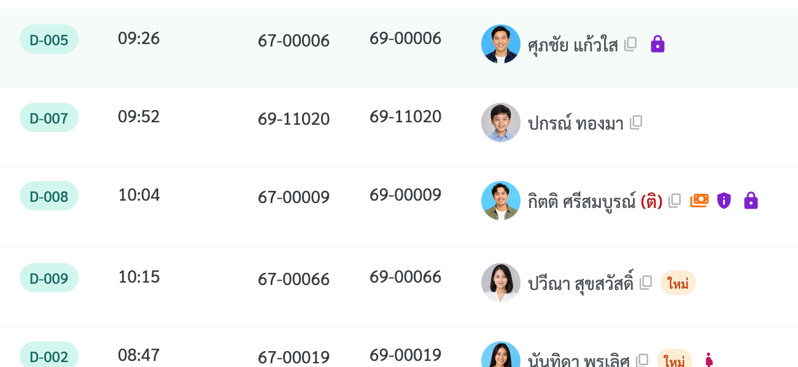
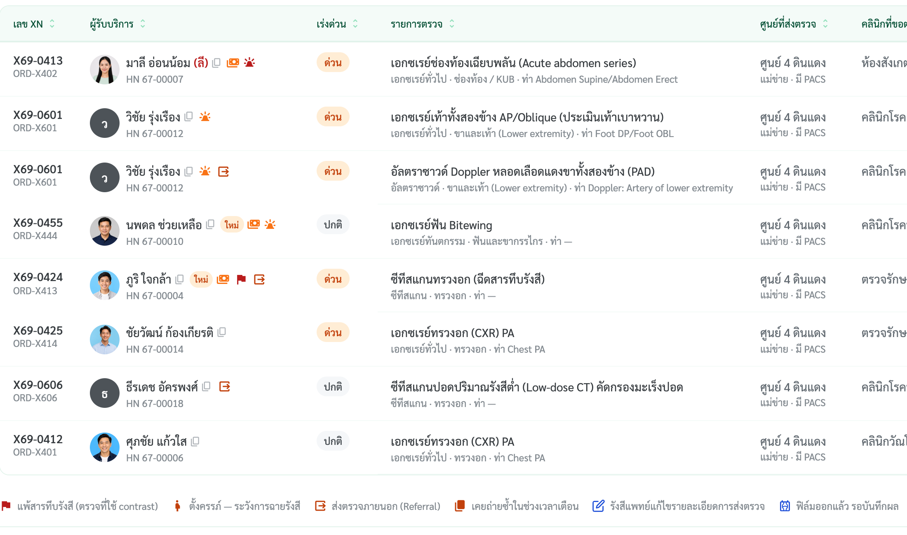
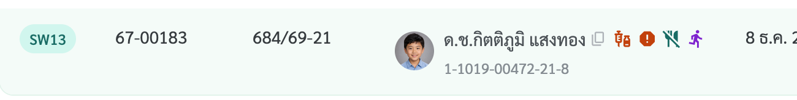

ไอคอนหลังชื่อผู้รับบริการ
มีอะไรบ้าง · แสดงเมื่อไร · ใช้ที่หน้าไหน — ชี้หรือแตะไอคอนเพื่อดูคำอธิบาย · ถอดจากโค้ด Kae-Branch 20 ต.ค. 69
ตัวอย่างแถวในรายชื่อ
ข้อมูลตัวอย่าง — ไม่เข้าเงื่อนไข = ไม่แสดงและไม่เว้นช่อง
person
มาลี อ่อนน้อม(ลี)ชื่อที่ต้องการให้เรียก: ลีcontent_copyคัดลอกชื่อกดแล้วเป็น ✓ "คัดลอกแล้ว" 1.5 วินาทีใหม่ผู้รับบริการรายใหม่มารับบริการครั้งแรกpaymentsยอดค้างชำระจากการมารับบริการครั้งก่อน · แจ้งชำระที่การเงิน11 ต.ค. 69 · 69-00412฿3202 ต.ค. 69 · 69-00187฿180รวม 2 รายการ฿500privacy_tipB24แสดงเฉพาะรหัส ICD-10 ไม่บอกชื่อโรคe911_emergencyฉุกเฉิน (Emergency)ต้องได้รับการรักษาทันทีการจัดการพบแพทย์ทันทีดำเนินการแจ้งแพทย์ · ส่ง ER / โทร 1669ที่มาผลคัดกรองกลางครั้งนี้psychology_altมีอาการทางจิต (OAS)ระดับส้ม · 2 อาการอาการที่พบหูแว่ว · ไม่หลับไม่นอนที่มาผลคัดกรองกลางครั้งนี้การเฝ้าระวังขณะรอตรวจต้องเฝ้าระวังขณะรอตรวจ
HN 67-00007 · ข้อมูลตัวอย่าง
ลำดับซ้าย → ขวา:ชื่อ·(ชื่อเรียก)·คัดลอก·ใหม่·ค้างชำระ·นัดปรึกษา·โรคอ่อนไหว·ฉุกเฉิน (แดง) / เร่งด่วน (ส้ม)·อาการทางจิต·ไอคอนเฉพาะหน้า
1. ไอคอนกลาง — ทุกหน้ารายชื่อ
วาดโดย MaskedWorklistName (src/components/privacy) · ใช้ใน 71 ไฟล์
| # | ไอคอน | ชื่อ | ข้อมูลมาจาก (บันทึกที่ไหน · ฟิลด์) | ค่าที่ทำให้แสดง | ไม่แสดงเมื่อ |
|---|---|---|---|---|---|
| 1 | (ลี)ชื่อที่ต้องการให้เรียก: ลี | ชื่อที่ต้องการให้เรียกตัวหนังสือในวงเล็บ สีแดง | เวชระเบียน › ข้อมูลส่วนตัว ช่อง "ชื่อที่ต้องการให้เรียก" → patientProfiles.preferredNamegetPreferredNameByHN · patientProfiles.js |
ไม่ใช่ค่าว่าง (เช่น "ลี") · ติ๊ก "ต้องการให้เรียกนามแฝง" (callByAlias) มีผลแค่ตอนเรียกคิว ไม่เปลี่ยนหน้าตา | ไม่มีชื่อเรียก |
| 2 | content_copyคัดลอกชื่อกดแล้วเป็น ✓ "คัดลอกแล้ว" 1.5 วินาที | คัดลอกชื่อcontent_copy 14px สีเทา | ชื่อ-นามสกุลของแถวนั้น (prop name)NameCopyButton |
แสดงเสมอ เว้นหน้าที่ส่ง copyable = false | หน้าส่ง copyable={false} — สุขภาพนักเรียน · ศูนย์เด็กเล็ก |
| 3 | ใหม่ผู้รับบริการรายใหม่มารับบริการครั้งแรก | ผู้รับบริการรายใหม่ป้าย "ใหม่" ส้ม xsmall | เวชระเบียน › ประเภทผู้ป่วย → patientProfiles.patientType · รายชื่อสมัครผ่าน Mobile App (mobileAppSignups.js)isNewPatientHn · NewPatientTag.jsx |
patientType = "ผู้ป่วยใหม่" หรือ HN อยู่ในรายชื่อมาครั้งแรกจาก Mobile App · หน้าที่มีเกณฑ์เองส่ง isNew = true | รายเก่า |
| 4 | paymentsยอดค้างชำระจากการมารับบริการครั้งก่อน · แจ้งชำระที่การเงิน11 ต.ค. 69 · 69-00412฿3202 ต.ค. 69 · 69-00187฿180รวม 2 รายการ฿500 | ค้างชำระpayments filled 16px ส้ม | คิวการเงิน /finance (financeLiveQueue) + คำขอลดหย่อน (financeApprovals)outstandingDebtOf · OutstandingDebtMark |
ยอดรวมค้าง > 0 จาก: ① Visit ก่อนวันนี้ที่ยอดค้าง (outstandingOf) > 0 ② priorDebts[].amount > 0 ③ Visit วันนี้ที่ส่งเคสลดหย่อนแล้ว สถานะรอนักสังคม / รอ ผอ.ศูนย์ / ไม่อนุมัติ (อนุมัติแล้ว = ยอดหลังหัก > 0) | รายใหม่ · ชำระที่การเงินแล้ว (หายเอง) · showDebt={false} |
| 5 | ขอคำปรึกษาขอคำปรึกษาวันนี้ · 13:30–13:45การนัดปรึกษาประเภทTelemedicineผู้ให้คำปรึกษานพ.ตัวอย่างให้คำปรึกษาให้คำปรึกษาวันนี้ · 14:00–14:15การนัดปรึกษาประเภทTelemedicineผู้ขอคำปรึกษาพว.ตัวอย่าง | นัดปรึกษาวันนี้ป้าย ขอคำปรึกษา (คราม) / ให้คำปรึกษา (ม่วง) | นัดปรึกษา Telemedicine (telemedConsults.js) ที่สร้างจากแท็บ/ปุ่ม "ส่งปรึกษา"myConsultsForHnToday · ConsultKindTag.jsx |
consult.hn = HN นี้ · consult.dateKey = วันนี้ · ผู้ใช้ปัจจุบันเป็นผู้ขอ (sent) หรือผู้ให้คำปรึกษา (received) · หน้านั้นเปิด showConsult | ปิดเป็นค่าเริ่มต้นทุกหน้าคิว — ดูที่แท็บ "ปรึกษา" |
| 6 | privacy_tipB24แสดงเฉพาะรหัส ICD-10 ไม่บอกชื่อโรค | โรคที่อ่อนไหวprivacy_tip filled 16px ม่วง | เวชระเบียน › โรคประจำตัว (mrPatients.chronicDiseases) · Problem list ของแพทย์ (treatmentProblemList) · ทะเบียนยา ARV (hivStiVisits)sensitiveDiagnosesFor · SensitiveDiagnosisMark.jsx |
รหัส B20–B24 หรือชื่อมีคำ HIV/เอชไอวี · รหัส C50 หรือชื่อมีคำ มะเร็งเต้านม · Problem list สถานะ active/watch · ARV สถานะ here/ltfu · และ role มีสิทธิ์ข้อมูลลับ (canSeeConfidential = true) | role ไม่มีสิทธิ์ข้อมูลลับ |
| 7 | e911_emergencyฉุกเฉิน (Emergency)ต้องได้รับการรักษาทันทีการจัดการพบแพทย์ทันทีดำเนินการแจ้งแพทย์ · ส่ง ER / โทร 1669ที่มาผลคัดกรองกลางครั้งนี้ | ฉุกเฉินe911_emergency filled สีแดง | จุดคัดกรอง OPD › ขั้น "ซักประวัติ" ช่อง ระดับการคัดแยก (Triage ESI) → screening.symptom.triageurgentTriageOf · TriageMark.jsx |
triage.level = 1 หรือ 2 → ฉุกเฉิน (แดง) | ESI 3–5 · ยังไม่คัดกรอง |
| 8 | e911_emergencyเร่งด่วน (Urgent)อาการไม่คงที่ หากรอนานอาจแย่ลงการจัดการพบแพทย์ภายใน 30 นาทีดำเนินการจัดคิวก่อน · วัดสัญญาณชีพซ้ำ | เร่งด่วนe911_emergency filled สีส้ม | จุดคัดกรอง OPD › ขั้น "ซักประวัติ" ช่อง ระดับการคัดแยก (Triage ESI) → screening.symptom.triageurgentTriageOf · TriageMark.jsx |
triage.level = 3 → เร่งด่วน (ส้ม) | ESI ≤ 2 (เป็นฉุกเฉิน) · ESI 4–5 · ยังไม่คัดกรอง |
| 9 | psychology_altมีอาการทางจิต (OAS)ระดับส้ม · 2 อาการอาการที่พบหูแว่ว · ไม่หลับไม่นอนที่มาผลคัดกรองกลางครั้งนี้การเฝ้าระวังขณะรอตรวจต้องเฝ้าระวังขณะรอตรวจ | มีอาการทางจิต (OAS)psychology_alt filled เหลือง/ส้ม/แดง | จุดคัดกรอง OPD › ขั้น "แบบประเมิน" แถว แบบประเมินพฤติกรรมก้าวร้าว (OAS) → screening.behaviour.oasDetailpsychSymptomsOf · PsychMark.jsx |
oasDetail.status = "has" (มีอาการทางจิต) และระดับ = เหลือง / ส้ม / แดง (ไม่ระบุระดับ → คิดจากอาการที่ติ๊กสูงสุด) · เขียว/ไม่มีอาการ = ไม่แสดง | ไม่มีอาการ · ยังไม่ประเมิน |
2. ไอคอนเฉพาะหน้า
วาดนอกชุดกลาง หรือส่งผ่าน extraMarks
| ไอคอน | ชื่อ | หน้า | ข้อมูลมาจาก (บันทึกที่ไหน · ฟิลด์) | ค่าที่ทำให้แสดง |
|---|---|---|---|---|
| warningก้าวร้าวพิเศษ — ต้องเฝ้าระวังขณะรอตรวจบันทึกโดย พยาบาลจุดคัดกรอง | ก้าวร้าวพิเศษ | คิวห้องตรวจ /treat | จุดคัดกรอง OPD › ขั้น "แบบประเมิน" → screening.behaviour.specialAggressionSpecialAggressionIcon · VitalsTextRow.jsx |
specialAggression = true และหมวดไม่ถูกข้าม · ⚠ ช่องติ๊กถูกถอดจากหน้าคัดกรองแล้ว (16 ต.ค. 69) — ขึ้นเฉพาะข้อมูลเก่า |
| pregnant_womanผู้ป่วยตั้งครรภ์ระวังยาและหัตถการที่มีข้อห้ามในหญิงตั้งครรภ์LMP2026-07-01อายุครรภ์ประมาณ 15 สัปดาห์ | ตั้งครรภ์ | คิวห้องตรวจ /treat | จุดคัดกรอง OPD › ขั้น "ซักประวัติ" ช่อง สถานะการตั้งครรภ์ + LMP → screening.pregnancyStatus · lmpPregnancyIcon · VitalsTextRow.jsx |
pregnancyStatus = "กำลังตั้งครรภ์" (อายุครรภ์คิดจาก LMP) |
| psychologyเคยประเมินสุขภาพจิตแล้ว — เฝ้าระวัง2Q plus + 9Qpsychologyเคยประเมินสุขภาพจิตแล้ว — เสี่ยงปานกลาง2Q plus + 9Qpsychologyเคยประเมินสุขภาพจิตแล้ว — เสี่ยงสูง — ส่งต่อด่วน2Q plus + 9Q | ความเสี่ยงสุขภาพจิต | เยี่ยมบ้าน: คิว · ติดตาม · ทะเบียน | เยี่ยมบ้าน › หน้าบันทึกการเยี่ยม แบบประเมิน 2Q plus / 9Q → ประวัติ homevisitMentalRisk (ผลล่าสุด)MentalRiskIcon · MentalRiskPanel.jsx |
เหลือง = 2Q plus บวก หรือ 9Q 7–12 · ส้ม = 9Q 13–18 · แดง = 2Q plus ข้อ 3 "มี" หรือ 9Q ข้อ 9 หรือ 9Q ≥ 19 · ไม่พบความเสี่ยง = ไม่แสดง |
| child_careเด็กpregnant_womanหญิงตั้งครรภ์elderlyผู้สูงอายุ | กลุ่มโภชนาการ | คิวงานโภชนาการ | งานโภชนาการ › เคสที่รับส่งต่อ ช่องกลุ่มเป้าหมาย → row.groupGroupMark · NutritionQueuePage.jsx |
child = เด็ก · pregnant = หญิงตั้งครรภ์ · elderly = ผู้สูงอายุ · adult = ไม่มีไอคอน |
| vaccinesไม่ได้รับวัคซีนตามช่วงวัยเด็กเข้าข่ายเด็กเสี่ยงno_mealsขาดสารอาหารเหตุผลการส่งต่อ · ร่างกาย | เหตุผลการส่งต่อ (33 แบบ) | งานสังคมสงเคราะห์ | ป๊อปอัปส่งต่อถึงงานสังคมสงเคราะห์ (ติ๊กเหตุผล) · เวชระเบียน/วัคซีน/คัดกรอง (เด็กเสี่ยง) → row.referralWatchTags · referralOtherReason · childAlertsSwRiskMarks · SocialWorkShared.jsx |
1 ค่าที่ติ๊ก = 1 ไอคอน · เด็กเสี่ยงเฉพาะอายุ < 18 ปี: ไม่มีสิทธิการรักษา · ไม่ได้วัคซีนตามวัย · สงสัยถูกกระทำรุนแรง |
| ใหม่ผู้รับบริการรายใหม่มารับบริการครั้งแรก | ป้าย "ใหม่" | คิวเวชระเบียน | คิวเวชระเบียน › แถว walk-in ที่ยังไม่มี HNRegistrationQueuePage.jsx |
isNewPatientRow(row) = true |
| scheduleอยู่ในการติดตามการดูแล | อยู่ในการติดตามการดูแล | คิวคลินิกเบาหวาน · ความดัน · หอบหืด/COPD | คลินิกโรคเรื้อรัง › ขึ้นทะเบียนผู้ป่วย (chronic registration) + ประวัติการมาคลินิกChronicQueuePage.jsx:225 |
มีทะเบียนแล้ว หรือจำนวนครั้งที่มาคลินิก > 0 |
| flagRed Flagพบความผิดปกติเด่นชัด / พัฒนาการล่าช้ารุนแรงเหตุผลตามผลประเมินส่งต่อหน่วยฟื้นฟู / สุขภาพจิตเด็ก | Red Flag พัฒนาการ | คิวคลินิกสร้างเสริมภูมิคุ้มกัน (/clinic/immunization) | คลินิกเด็กดี › แบบประเมินพัฒนาการ DSPM / DAIM (developmentClinic.js)RedFlagMark · ImmunizationQueuePage.jsx:170 |
พบพัฒนาการล่าช้า และเข้าเกณฑ์ Red Flag (getDevRedFlag → active = true)ตอนนี้ใช้ title ของเบราว์เซอร์ ไม่ใช่ Tooltip สีขาว · ไอคอน 20px ใหญ่กว่าชุดกลาง |
| มาฟังผลมาฟังผลไม่ต้องคัดกรอง · ไม่ซักประวัติ/ตรวจร่างกายซ้ำการส่งต่อส่งจากจุดคัดกรองผู้ส่งพยาบาลคัดกรองแพทย์นพ.ตัวอย่าง | มาฟังผล | คิว OPD · คิวห้องตรวจ /treat · ANC · วางแผนครอบครัว (เบาหวาน/ความดันเป็นคำ "นัดฟังผล" ใต้ชื่อ) | ป๊อปอัป "ยืนยันรับผู้ป่วย" ที่จุดคัดกรอง ติ๊ก "มาฟังผล" → resultsVisits.jsResultsVisitBadge.jsx |
มีแถว resultsVisit ของ HN วันนี้ |
| ข้อมูลลับข้อมูลลับนักเรียนรายนี้มีข้อมูลที่ต้องปกปิด | ข้อมูลลับ (นักเรียน) | สุขภาพนักเรียน: คิว · ทะเบียนนักเรียน | ทะเบียนนักเรียน › ข้อมูลนักเรียน → student.confidentialSchoolHealthQueuePage.jsx:377 · StudentRegistryPage.jsx:212 |
confidential = true |
| เสียชีวิตเสียชีวิตTOR 1.1.1.2 | เสียชีวิต | คิวเวชระเบียน · ทะเบียน | เวชระเบียน › สถานะการมีชีวิต → patient.lifeStatusRegistrationQueuePage.jsx:255 |
lifeStatus = "deceased" |
| กำลังดูกำลังดูแถวที่เปิดรายละเอียดอยู่ | กำลังดู | สุขภาพนักเรียน: หน้าวิเคราะห์ | สถานะหน้าจอ (ไม่ได้มาจากข้อมูลผู้ป่วย)SchoolHealthAnalysisPage.jsx:961 |
แถวที่เปิดแผงรายละเอียดอยู่ |
| lockข้อมูลลับVisit นี้ตั้งเป็นข้อมูลลับ (§1.4.2) · เปิดดูได้เฉพาะผู้มีสิทธิ์ | 🔒 ข้อมูลลับ (ทันตกรรม) | คิวทันตกรรม /clinic/dental | ทันตกรรม › Visit ที่ตั้งเป็นข้อมูลลับ → dentalVisits.confidential (TOR §1.4.2)NameMark · DentalQueuePage.jsx |
confidential = true · หน้าบันทึกแสดงแบนเนอร์ข้อมูลลับ / การ์ดล็อกเมื่อไม่มีสิทธิ์ |
| lockผลตรวจเป็นความลับเช่น HIV / VCT · ชื่อและ HN ถูกปกปิดในคิว | 🔒 ผลตรวจเป็นความลับ (แล็บ) | คิวห้องปฏิบัติการ /lab/queue | รายการตรวจชันสูตรที่กำหนดเป็นความลับ → labCatalog confidential (เช่น HIV / VCT)NameMark · LabQueuePage.jsx |
confidential = true · คิวแสดง "ปกปิด (VCT)" แทนชื่อ และ HN ••••• |
| pregnant_womanหญิงตั้งครรภ์ผู้ป่วยฝากครรภ์ · ระวังยาและหัตถการที่มีข้อห้าม | หญิงตั้งครรภ์ (ทันตกรรม) | คิวทันตกรรม /clinic/dental | ทะเบียนฝากครรภ์ → แถวคิวทันตกรรม patientTypeNameMark · DentalQueuePage.jsx |
patientType = "anc" (ผู้ป่วยฝากครรภ์) |
| flagแพ้สารทึบรังสีตรวจที่ใช้ contrast · ระบุสารที่แพ้และอาการ | แพ้สารทึบรังสี (เอกซเรย์) | คิวเอกซเรย์ /xray/queue | ใบส่งตรวจเอกซเรย์ (แพทย์สั่ง CPOE) ช่องประวัติแพ้สารทึบรังสี → xrayOrders.allergy · contrastXrayQueuePage.jsx · RowWarnGlyphs |
รายการตรวจใช้สารทึบรังสี (contrast = true) และ allergy.has = true · tooltip: แพ้<สาร> — <อาการ> |
| pregnant_womanตั้งครรภ์LMP · ระวังการฉายรังสี | ตั้งครรภ์ (เอกซเรย์) | คิวเอกซเรย์ /xray/queue | ใบส่งตรวจเอกซเรย์ ช่องสถานะการตั้งครรภ์ + LMP → xrayOrders.pregnancyXrayQueuePage.jsx · RowWarnGlyphs |
pregnancy.status = "ตั้งครรภ์" (หมดประจำเดือน / ไม่ตั้งครรภ์ = ไม่แสดง) |
| radiologyฟิล์มออกแล้วรอบันทึกผล | ฟิล์มออกแล้ว (เอกซเรย์) | คิวเอกซเรย์ /xray/queue | เจ้าหน้าที่รังสีกดฟิล์มออก → xrayOrders.filmIssuedAtXrayQueuePage.jsx · RowWarnGlyphs |
มีเวลาฟิล์มออกแล้ว (ใบยังรอบันทึกผล) |
| outputส่งตรวจภายนอก (Referral)ไม่ได้ตรวจในศูนย์ฯ | ส่งตรวจภายนอก (เอกซเรย์) | คิวเอกซเรย์ /xray/queue | ใบส่งตรวจแบบส่งตรวจภายนอก → xrayOrders.referralOnlyXrayQueuePage.jsx · RowWarnGlyphs |
referralOnly = true (ไม่ได้ตรวจในศูนย์ฯ) |
| content_copyเคยถ่ายซ้ำในช่วงเวลาเตือนรายการเดียวกันเคยถ่ายเมื่อเร็ว ๆ นี้ | เคยถ่ายซ้ำ (เอกซเรย์) | คิวเอกซเรย์ /xray/queue | ประวัติเอกซเรย์ของ HN (xrayHistoryFor) เทียบรายการเดียวกัน → duplicateWarning (TOR §1.12.5.9)XrayQueuePage.jsx · duplicateWarning |
เคยถ่ายรายการตรวจเดียวกันภายในช่วงเวลาเตือน · tooltip บอกวันที่ครั้งก่อน |
| editรังสีแพทย์แก้ไขรายละเอียดการส่งตรวจเวลา · ผู้แก้ · เหตุผล | รังสีแพทย์แก้ไขคำสั่ง (เอกซเรย์) | คิวเอกซเรย์ /xray/queue | รังสีแพทย์แก้ไขใบส่งตรวจ → xrayOrders.amendedByRadiology · amendments (TOR §1.12.5.6)XrayQueuePage.jsx · RowWarnGlyphs |
amendedByRadiology = true · tooltip: เวลา ผู้แก้ — เหตุผล ทุกครั้ง |
| flagพัฒนาการล่าช้า (red flag)ส่งต่อหน่วยฟื้นฟู/สุขภาพจิตเด็กได้ทันที | Red Flag (งานพัฒนาการ) | คิวคัดกรองงานพัฒนาการ /clinic/mental-health/screening | คลินิกเด็กดี/งานพัฒนาการ › แบบประเมิน DSPM / DAIM → developmentClinic.js (getDevRedFlag)DevSpecialMarks.jsx |
ล่าช้า ≥ 2 ด้าน หรือผู้ตรวจติ๊กอาการเด่นชัด (redFlag = true) |
| monitor_weightน้ำหนักแรกเกิดน้อยน้อยกว่า 2,500 กรัม | น้ำหนักแรกเกิดน้อย (งานพัฒนาการ) | คิวคัดกรองงานพัฒนาการ /clinic/mental-health/screening | ข้อมูลเด็ก น้ำหนักแรกเกิด → developmentClinic.js birthWeightDevSpecialMarks.jsx |
birthWeight < 2.5 กก. (เด็กกลุ่มเสี่ยงตามคู่มือ DAIM) |
| HN 67-00007HN ของผู้รับบริการ | ป้าย HN | การจัดการความยินยอม | HN ของแถวConsentManagementPage.jsx:1024 |
แสดงทุกแถว |

ภาพจากระบบจริง — คิวเอกซเรย์ /xray/queue (แพ้สารทึบรังสี · ส่งตรวจภายนอก + คำอธิบายสัญลักษณ์ใต้ตาราง)
3. เหตุผลการส่งต่อ — งานสังคมสงเคราะห์
1 เหตุผล = 1 ไอคอน · สีตามกลุ่ม · src/data/swInboundReferrals.js
- แสดงที่
- งานสังคมสงเคราะห์ › หน้าหลัก
/clinic/social-work· ตาราง "รายชื่อผู้ขอรับบริการ" และแท็บ "เด็กเข้าข่ายเด็กเสี่ยง" - ตำแหน่ง
- คอลัมน์ชื่อ-สกุล ต่อท้ายชื่อ หลังไอคอนกลาง (คัดลอก · ใหม่ · ค้างชำระ …) · เลขบัตรประชาชนอยู่บรรทัดล่าง
- ข้อมูลมาจาก
- ป๊อปอัปส่งต่อถึงงานสังคมสงเคราะห์ (ติ๊กเหตุผล) · เด็กอายุ < 18 ปีที่ระบบพบ: ไม่มีสิทธิการรักษา · ไม่ได้รับวัคซีนตามวัย · สงสัยถูกกระทำรุนแรง
- Hover / แตะ
- ชื่อหัวข้อ · กลุ่มเหตุผล · การส่งต่อ (ส่งมาจาก · ผู้ส่ง)
child_care
ภาพจากระบบจริง — /clinic/social-work · SW13
ด.ช.กิตติภูมิ แสงทองcontent_copyคัดลอกชื่อกดแล้วเป็น ✓ "คัดลอกแล้ว" 1.5 วินาทีvaccinesไม่ได้รับวัคซีนตามช่วงวัยเด็กเข้าข่ายเด็กเสี่ยง · ควรคัดกรองและเฝ้าระวังการส่งต่อส่งมาจากงานอนามัยโรงเรียนผู้ส่งพว.สุนันทา ใส่ใจreportสงสัยว่าถูกกระทำความรุนแรงทั้งร่างกายและจิตใจเด็กเข้าข่ายเด็กเสี่ยง · ควรคัดกรองและเฝ้าระวังการส่งต่อส่งมาจากงานอนามัยโรงเรียนผู้ส่งพว.สุนันทา ใส่ใจno_mealsขาดสารอาหารเหตุผลการส่งต่อ · ร่างกายการส่งต่อส่งมาจากงานอนามัยโรงเรียนผู้ส่งพว.สุนันทา ใส่ใจdirections_runซนมาก / อยู่ไม่สุขเหตุผลการส่งต่อ · จิตใจ / อารมณ์การส่งต่อส่งมาจากงานอนามัยโรงเรียนผู้ส่งพว.สุนันทา ใส่ใจ
SW13 · HN 67-00183 · ข้อมูลตัวอย่าง (ชี้หรือแตะไอคอน)

ไอคอนทั้งหมด 33 แบบเด็กเข้าข่ายเด็กเสี่ยง 3
- credit_card_offเวชระเบียนไม่มีสิทธิการรักษา
credit_card_off - vaccinesไม่ได้รับวัคซีนตามช่วงวัย
vaccines - reportสงสัยว่าถูกกระทำความรุนแรงทั้งร่างกายและจิตใจ
report
ร่างกาย 7
- trending_downพัฒนาการช้า
trending_down - psychology_altบกพร่องทางสติปัญญา
psychology_alt - accessibleพิการ
accessible - medical_informationมีโรคประจำตัว
medical_information - no_mealsขาดสารอาหาร
no_meals - restaurantเสี่ยงขาดสารอาหาร
restaurant - monitor_weightมีน้ำหนักเกินมาตรฐาน
monitor_weight
จิตใจ / อารมณ์ 4
- cribเลี้ยงยาก
crib - mood_badเจ้าอารมณ์
mood_bad - directions_runซนมาก / อยู่ไม่สุข
directions_run - sentiment_dissatisfiedซึมเศร้าผิดปกติ
sentiment_dissatisfied
เศรษฐกิจ 2
- workต้องทำงานหารายได้ก่อนวัยอันควร
work - schoolขาดแคลนทุนทรัพย์ในการศึกษา
school
พฤติกรรม 11
- liquorติดสารเสพติด / ติดเหล้า
liquor - casinoติดเกม / การพนัน
casino - backpackหนีโรงเรียน
backpack - groupsชอบมั่วสุม
groups - directions_walkหนีออกจากบ้าน / เร่ร่อน
directions_walk - no_adult_contentขายบริการทางเพศ
no_adult_content - shopping_cartใช้จ่ายฟุ่มเฟือยเกินวัย
shopping_cart - explicitมัวเมาสื่อลามก
explicit - campaignเรียกร้องความสนใจ
campaign - pregnant_womanตั้งครรภ์ก่อนวัยอันควร
pregnant_woman - healingมีบาดแผลบ่อย ๆ
healing
ถูกกระทำ / ทอดทิ้ง 4
- person_offถูกทอดทิ้ง ขาดผู้ดูแล
person_off - personal_injuryมีบาดแผลบ่อย ๆ
personal_injury - constructionถูกใช้แรงงาน
construction - front_handพฤติกรรมทางเพศไม่เหมาะสม
front_hand
อื่น ๆ 1
- more_horizอื่น ๆ (ระบุเอง)
more_horiz
4. การ์ดเขียวหัวแฟ้ม (PatientCard)
ทุกหน้าบันทึก
- หลังชื่อ
- (ชื่อเรียก) · โรคอ่อนไหว · อาการทางจิต — เกณฑ์เดียวกับรายชื่อ · ไอคอนอย่างเดียว ไม่มีวงกลมพื้น · โล่โรคอ่อนไหวเป็นสีขาวให้อ่านออกบนสีเขียว
- แถว HN · VN
- ป้าย "ค้างชำระ" · ป้ายไซเรน "ฉุกเฉิน / เร่งด่วน" · ป้าย "VIP / ผู้ป่วยพิเศษ" (ไม่ได้อยู่ต่อท้ายชื่อ)
5. กติกาสำหรับ Dev
ใช้ร่วมกับ CLAUDE.md (token · icon · tooltip)
- ที่อยู่โค้ด
- ไอคอนกลางทั้งหมดอยู่ใน MaskedWorklistName — เพิ่มเกณฑ์ที่ data function แล้วทุกรายชื่อได้พร้อมกัน
- ขนาด
- กรอบ 16 × 24 (--dim-size-300 × --dim-size-500) · Material Symbols filled (FILL 1 · wght 500) · ระยะห่าง 4px (--dim-space-100)
- ตัดคำ
- ไอคอนไม่หด — ชื่อจริงเป็นส่วนเดียวที่ตัด …
- Tooltip
- สีขาว (variant light) · หัวข้อ → สรุป 1 บรรทัด → กลุ่ม label / value · ห้ามใช้ title ของเบราว์เซอร์
- มือถือ
- ไอคอนมี tabIndex 0 + aria-label → แตะแล้วเห็น tooltip
- พื้นหลัง
- แสดงแค่ไอคอน ไม่มีวงกลมรองพื้นทุกที่ (รวมการ์ดเขียวหัวแฟ้ม · ผู้ใช้สั่ง 20 ต.ค. 69)